Computer Networks
A comprehensive guide to understanding computer networking concepts, from basics to OSI and TCP/IP models.
🌐 Computer Networks — A Complete Guide
📚 Quick Navigation
📚 Networking Basics
🌐 Network Types (LAN, WAN, Internet)
🌐 What is a Network?
A network is a collection of interconnected devices that communicate and share resources.
👉 Key idea:
Network = devices + communication
🏠 LAN (Local Area Network)
A LAN is a network in a small area like a home, office, or building.
📍 Examples:
- Your home WiFi
- College lab network
🔑 Characteristics:
- Small geographic area
- High speed
- Privately owned
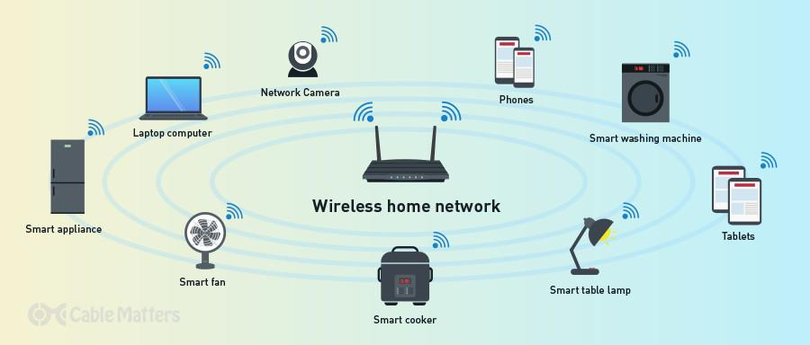
🌍 WAN (Wide Area Network)
A WAN connects multiple LANs over large distances like cities or countries.
📍 Examples:
- A company connecting offices across cities
- Bank networks across countries
🔑 Characteristics:
- Large geographic coverage
- Slower than LAN (comparatively)
- Uses public infrastructure (fiber, satellites)
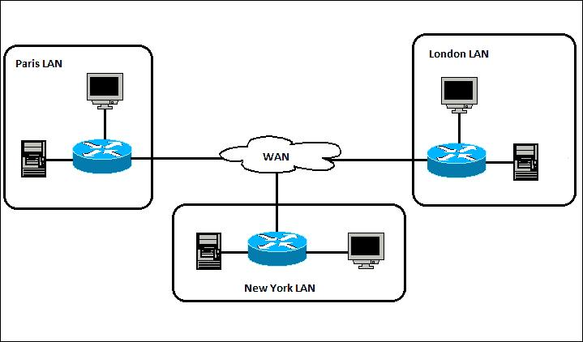
🌐 What is the Internet?
The Internet is the largest WAN in the world—a global network connecting millions of networks.
📍 What it connects:
- Websites
- Servers
- Devices worldwide
👉 Interview one-liner:
The Internet is a global network of interconnected networks that communicate using standard protocols like TCP/IP.
📡 Router, Switch & ISP
📡 Router (Traffic Director between Networks)
A router Connects different networks together and decides where data should go.
💡 Example:
Your home router connects:
- Your LAN (home devices)
- To the Internet (WAN)
🔑 What it does:
- Assigns IP addresses (via DHCP) for devices
- Routes data packets to correct destination
- Connects you to ISP
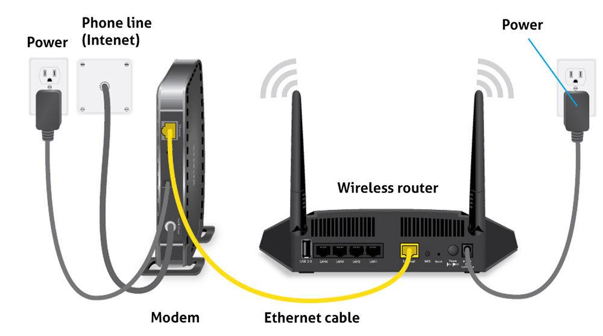
🔌 Switch (Connects Devices Within a LAN Network)
A Switch connects devices inside the same network (LAN) and forwards data using MAC addresses.
💡 Example:
In an office:
All
computers → connected to a Switch then Switch → connected to router
🔑 What it does:
- Sends data to exact device (using MAC address)
- Faster and smarter than a hub
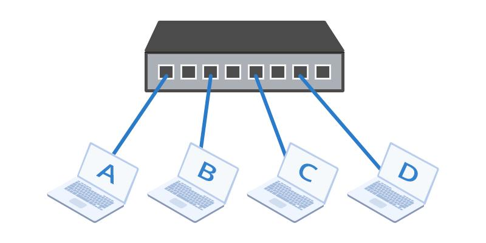
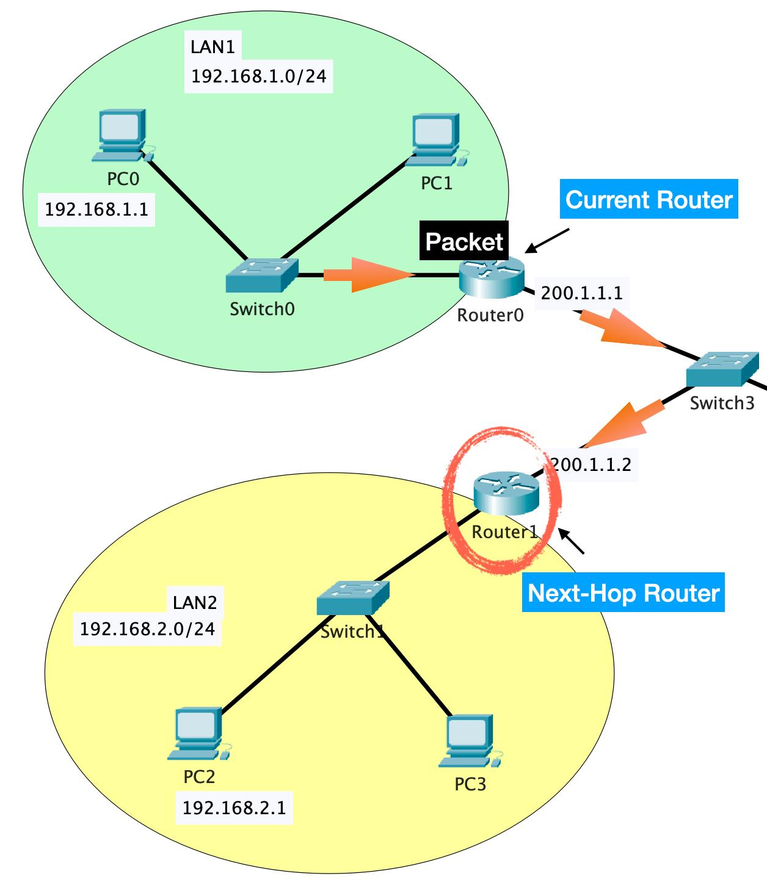
🌐 ISP (Internet Service Provider)
An ISP is the company that gives you internet access, which is part of a WAN (Wide Area Network).
📍 Examples in India:
- Jio
- Airtel
- BSNL
🔑 What it does:
- Connects your router to the global internet
- Provides public IP address
- Maintains infrastructure (fiber, cables, towers)
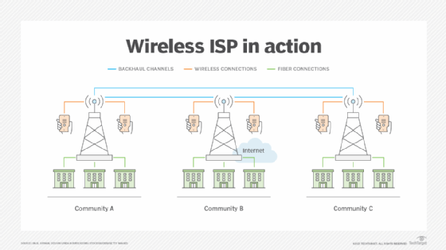
🔄 How Data Flows
When data needs to go outside (to the internet), the router forwards it to the ISP, which then routes it across the WAN to reach the destination server. Similarly, responses from the internet come back through the ISP to the router, which delivers them to the correct device inside the LAN.
📍 IP & MAC Addresses
📍 IP Address (Identity of a Device)
Like a home address for your device
Example: 192.168.1.1 (private), public IP from ISP
👉 Key point:
✅ Can change (dynamic IP)
Changes Ip when:
- You reconnect Wi-Fi
- Router restarts
- Lease expires
📍 MAC Address (Device Identity)
Unique hardware ID of the device assigned by the manufacturer to the network card.
Example: 00:1A:2B:3C:4D:5E
Works like a permanent ID(like Aadhaar for device)
👉 Key point:
It is unique per device
Used inside local network (LAN)
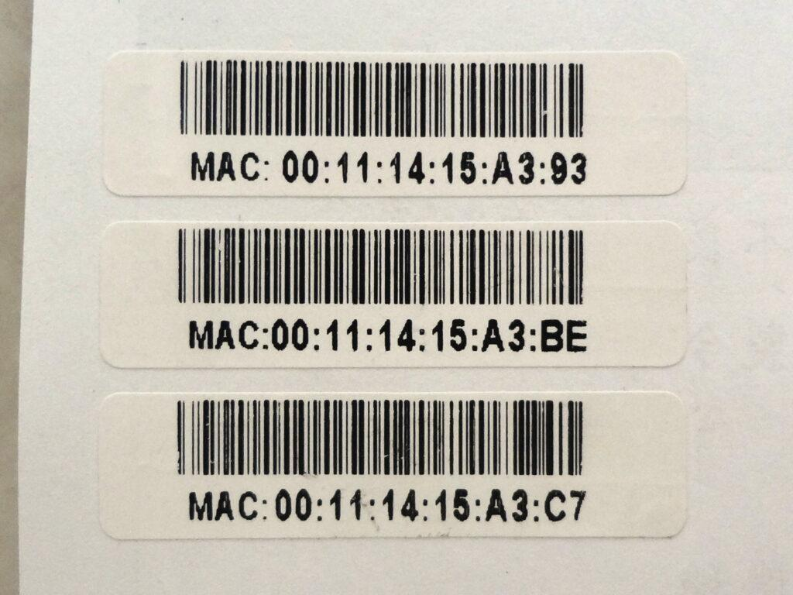
🛡️ Hub, Firewall & Access Point
📍 Hub (Old Concept)
Sends data to
all
devices (inefficient).
Replaced by switches.
🛡️ Firewall
Security system that:
- Blocks unauthorized access
- Allows safe traffic
📶 Access Point (AP)
An Access Point (AP) is a device that allows wireless devices (phones, laptops) to connect to a wired network using Wi-Fi.
👉 In simple words:
Access Point = WiFi provider inside a network
🧠 How It Works:
- AP connected to switch/router via cable
- Creates wireless signal (WiFi)
- Devices connect without cables
🏢 Real Example:
In offices, malls, colleges :
- Multiple APs are installed on ceilings
- They provide WiFi coverage across large areas
👉 Your Phone → connects to AP → switch → router → internet
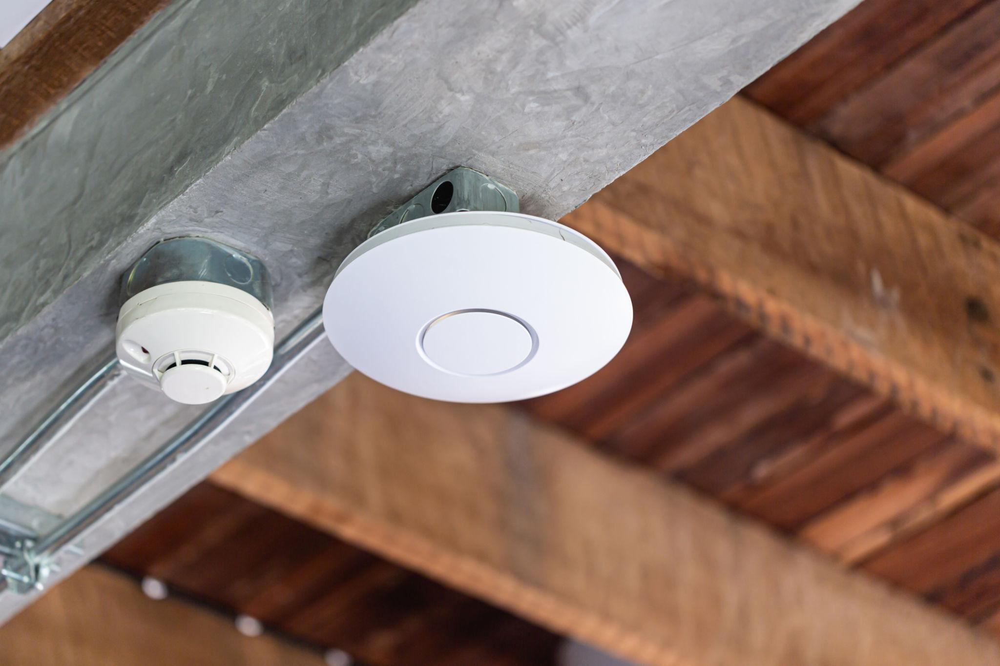
📡 DHCP & Full Network Flow
📡 What does DHCP do?
DHCP = Dynamic Host Configuration Protocol
It automatically gives IP addresses to devices when they connect to the network
🌐 Full Example: How You Access Google.com
When you connect your phone or laptop to Wi-Fi, it joins a LAN (Local Area Network) through an access point (usually built into your router). At first, your device is identified using its MAC address, which is a unique hardware ID. The router then uses DHCP (Dynamic Host Configuration Protocol) to automatically assign your device an IP address (like 192.168.x.x), along with other details such as the default gateway and DNS server. Inside the LAN, a switch(often integrated into the router) uses MAC addresses to efficiently send data between devices.
Now, when you type a website like Google.com in your browser, your system doesn't understand domain names directly, so it queries a DNS (Domain Name System) server to convert that name into an IP address. Once it gets the IP, your device sends a request to the router. Since your IP is private and not usable on the internet, the router performs NAT(Network Address Translation) , converting your private IP into a public IP provided by your ISP (Internet Service Provider). This request is then sent out to the broader WAN (Wide Area Network), which is essentially the internet—a global network of interconnected routers.
The request travels across multiple networks until it reaches Google's servers. The server processes your request and sends back the webpage data. This response travels back through the internet to your ISP, then to your router, which uses its NAT table to forward the data to your device. Finally, your browser receives the data and renders the webpage, showing you the Google homepage.
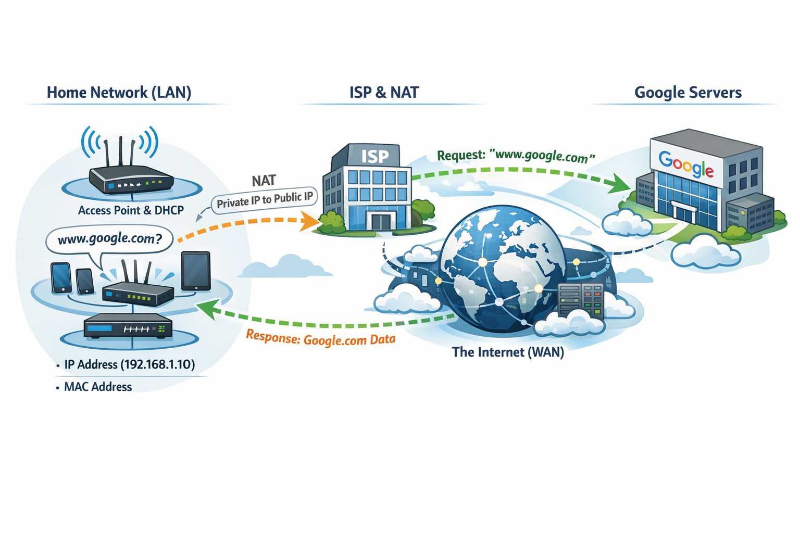
🌐 OSI & TCP/IP Models
🔄 OSI Layers – What Happens at Each Layer (Real Flow)
7️⃣ Application Layer (User Interaction)
Interfaces with end-user applications (HTTP, SMTP).
👉 What happens:
- You type google.com
- Browser creates an HTTP request
- It asks DNS: "What is the IP of google.com?"
👉 Protocols:
HTTP, HTTPS, DNS
👉 Output:
GET / HTTP/1.1
Host: google.com
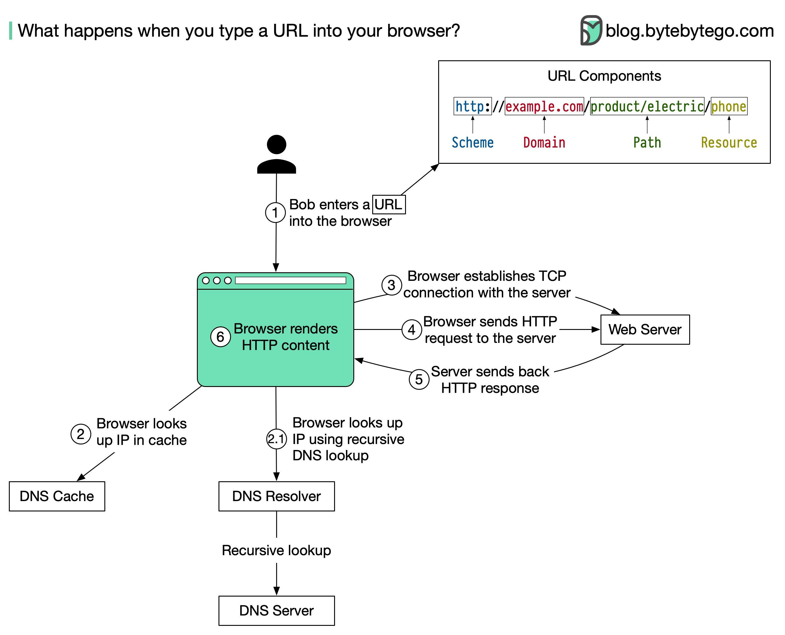
6️⃣ Presentation Layer (Data Formatting & Security)
Handles data translation, encryption, compression.
👉 What happens:
- Data is encrypted (HTTPS → TLS)
- Format conversion (JSON, text, etc.)
- Compression may happen
👉 Example:
Plain text → encrypted data
👉 Output: Encrypted HTTP request
5️⃣ Session Layer (Connection Management)
Manages sessions (e.g., login/logout, checkpoints).
👉 What happens:
- Establishes session between client & server
- Maintains connection (login session, cookies)
👉 Example:
Keeps you logged into a website
👉 Output: Session established (connection alive)
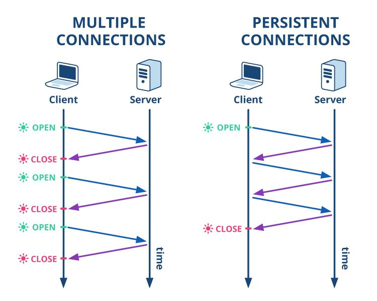
4️⃣ Transport Layer (Reliable Delivery – TCP/UDP)
Provides reliable delivery (TCP) or fast delivery (UDP).
👉 What happens:
- Breaks data into segments
- Each segment gets a TCP/UDP header (with source/destination ports, sequence numbers, etc.)
- Uses TCP (reliable) or UDP (fast)
- Adds port numbers (e.g: 443 for HTTPS, 80 for HTTP)
👉 TCP steps:
SYN → SYN-ACK → ACK
👉 Output:
Segments + Port info
3️⃣ Network Layer (IP Routing)
Handles routing and addressing (IP).
Segments are wrapped
into packets (or datagrams in case of UDP).
Each packet gets an IP
header (with source/destination IP addresses).
👉 What happens:
- Adds IP address : Source IP (your device) , Destination IP (Google server)
- Decides path (routing)
👉 Output:
Packet with IP addresses
2️⃣ Data Link Layer (MAC Addressing – Local Delivery)
Ensures error-free transfer between adjacent nodes (Ethernet).
Packets are encapsulated
into frames.
Each frame has a MAC header + trailer
(with
source/destination MAC addresses, error-checking CRC).
👉 What happens:
- Adds MAC address
- Finds next device in LAN (using ARP)
- Switch forwards data
👉 Output:
Frame with MAC addresses
1️⃣ Physical Layer (Actual Transmission)
Frames are converted into bits (0s and 1s).
👉 What happens:
- Data becomes bits (0s & 1s)
- These bits are transmitted as electrical signals, light pulses, or radio waves over the medium (cable, fiber, Wi-Fi)
👉 Output:
010101010101 → transmitted
🔄 Full Flow (Super Important)
👉 Sending side:
Application → Presentation → Session → Transport → Network → Data Link → Physical
👉 Receiving side (reverse):
Physical → Data Link → Network → Transport → Session → Presentation → Application
📋 Layer Summary Table
| Layer | What You Should Say |
|---|---|
| Application | Creates request (HTTP, DNS) |
| Presentation | Encryption (TLS) |
| Session | Maintains connection |
| Transport | TCP/UDP, reliability |
| Network | IP addressing & routing |
| Data Link | MAC addressing |
| Physical | Sends bits |
🎯 Summary In OSI Model
When a user sends a request, the application layer creates the request, the presentation layer encrypts it, the session layer manages the connection, the transport layer ensures reliable delivery using TCP, the network layer adds IP addresses for routing, the data link layer adds MAC addresses for local delivery, and the physical layer transmits the data as bits. At the receiver side, the process happens in reverse.
👉 "Data → Segments → Packets → Frames → Bits"
🔄 TCP/IP Model (4 Layers – Practical View)
👉 TCP/IP has 4 layers:
- Application
- Transport
- Internet
- Network Access
1️⃣ Application Layer (User Request + Protocols)
Covers OSI's Session, Presentation, and Application layers (HTTP, FTP, DNS).
👉 What happens:
- Browser creates HTTP request
- DNS resolves domain → IP
- HTTPS (TLS) encryption starts
👉 Protocols:
HTTP / HTTPS, DNS
👉 Output:
GET / HTTP request (encrypted if HTTPS)
2️⃣ Transport Layer (Reliable Communication)
👉 What happens:
- Chooses TCP (for HTTP/HTTPS)
- Breaks data into segments
- Adds port numbers (443 for HTTPS)
👉 TCP ensures:
- Reliability
- Order
- No data loss
👉 Example:
TCP 3-way handshake:
SYN → SYN-ACK → ACK
👉 Output:
Segments + Port (443)
3️⃣ Internet Layer (Routing with IP)
👉 What happens:
- Adds IP address : Source IP (your device) , Destination IP (Google server)
- Decides path across internet
👉 Output:
Packet with IP addresses
4️⃣ Network Access Layer (Local Delivery + Physical Send)
Combines OSI's Physical + Data Link layers.
👉 What happens:
- Adds MAC address
- Uses:
- Ethernet (cable) OR
- WiFi
- Converts to bits (0s & 1s)
👉 Output:
Frame → Bits → Sent over network
🔄 Reverse Flow (Server → You)
- Server processes request
- Sends response back
- Layers work in reverse:
Network Access → Internet → Transport → Application
🔥 OSI vs TCP/IP Mapping
| OSI Model | TCP/IP Model |
|---|---|
| Application + Presentation + Session | Application |
| Transport | Transport |
| Network | Internet |
| Data Link + Physical | Network Access |
🧠 Summary in TCP/IP Model
The application layer creates the HTTP request, the transport layer uses TCP to ensure reliable delivery, the internet layer adds IP addresses for routing, and the network access layer sends the data using MAC addresses and physical transmission. The response follows the same path in reverse.
📊 Core Difference (OSI vs TCP/IP)
| OSI Model | TCP/IP Model |
|---|---|
| 7 layers | 4 layers |
| Conceptual (teaching model) | Practical (real-world model) |
| Scenario: Separate Presentation & Session | Merged into Application |
💼 Real-World Usage
Most real-world companies like Google, Amazon uses the TCP/IP model.
In real systems, encryption and session management still happen, but they are handled by application-layer protocols like TLS and HTTP.
🎯 Final Summary
The OSI model has 7 layers and separates presentation and session, while TCP/IP has 4 layers and merges those responsibilities into the application layer.
🔄 TCP vs UDP
📡 TCP vs UDP Overview
TCP (Transmission Control Protocol) and UDP (User Datagram Protocol) are two core transport layer protocols that define how data is sent over a network. TCP is connection-oriented, meaning it first establishes a reliable connection between sender and receiver using a handshake before sending data. It ensures that all packets arrive correctly, in order, and without loss by using acknowledgments, retransmissions, and error checking. Because of this reliability, TCP is used in applications where accuracy is critical, such as web browsing (HTTP/HTTPS), file transfers, and emails. However, this reliability comes with some overhead, making TCP relatively slower.
On the other hand, UDP is connectionless, meaning it sends data without establishing a connection and without guaranteeing delivery, order, or duplication. It simply transmits packets (called datagrams) as fast as possible with minimal overhead. This makes UDP much faster and suitable for real-time applications like video streaming, online gaming, and voice calls, where speed is more important than perfect accuracy. Even if some packets are lost, the application can still continue smoothly.
⚡ Key Difference
| Feature | TCP | UDP |
|---|---|---|
| Connection | Yes (3-way handshake) | No |
| Reliability | High (guaranteed delivery) | Low (no guarantee) |
| Speed | Slower | Faster |
| Order | Maintained | Not guaranteed |
| Use Cases | Web, Email, File transfer | Video Streaming, Online Gaming, Voice calls |
🧠 Summary
TCP is a reliable, connection-oriented protocol ensuring ordered delivery, while UDP is a fast, connectionless protocol optimized for low latency without delivery guarantees.
🤝 TCP 3-Way Handshake (Connection Establishment)
🎯 Goal:
👉 Establish a reliable connection before sending data
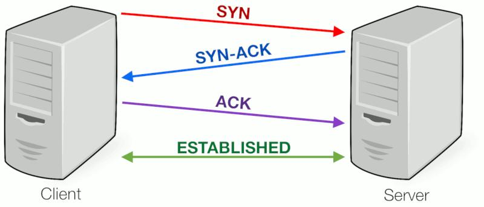
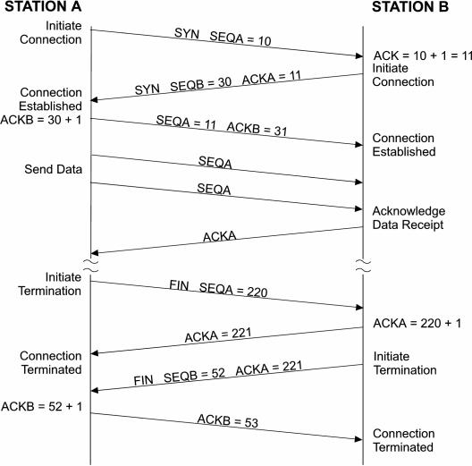
🔄 Steps:
1️⃣ SYN (Client → Server)
Client sends:
- SYN = 1
- Sequence number (e.g., seq = 100)
Meaning: 👉 "I want to start communication"
2️⃣ SYN-ACK (Server → Client)
Server responds:
- SYN = 1, ACK = 1
- seq = 500, ack = 101
Meaning: 👉 "I received your request, let's connect"
3️⃣ ACK (Client → Server)
Client sends:
- ACK = 1
- ack = 501
Meaning: 👉 "Connection established"
✅ Result:
- Connection is established
- Both sides are synchronized
- Data transfer starts
🔁 What is 2-Way Handshaking?
👉 In 2-way handshake, only two messages are exchanged:
🔄 Flow:
- Client → Server: SYN
- Server → Client: ACK
❌ Why 2-Way Handshake is NOT Used in TCP
🚫 Problem 1: Old/Duplicate Requests
Scenario:
- Client sends SYN → gets delayed in network
- Client retries → new connection established
- Later, old delayed SYN arrives at server
👉 Server thinks: "Oh, new connection request!"
👉 Server sends ACK and opens a wrong connection
💥 Result:
Duplicate / unwanted connections,
Resource waste
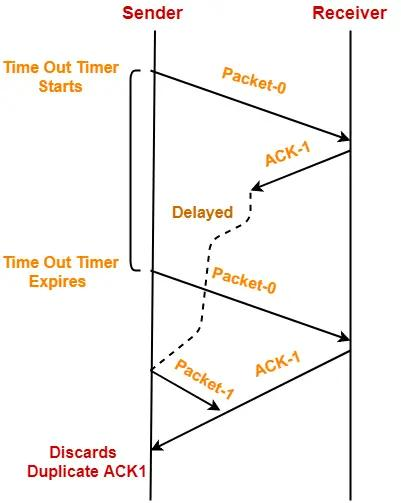
🚫 Problem 2: No Confirmation from Client
In 2-way: Server doesn't know if client received response
👉 Missing: Final ACK from client
💥 Result:
Server may think connection is established, But
client
may not
✅ Why 3-Way Handshake Solves This
🔄 Extra Step (ACK from Client) Confirms:
- Client received server response
- Both sides are ready
- Sequence numbers synced
👉 Prevents: Duplicate connections, Half-open connections
🧠 Summary
👉 TCP uses a 3-way handshake (SYN, SYN-ACK, ACK) to establish a reliable connection
and synchronize sequence numbers.
TCP uses a 4-way handshake for connection
termination.
🌐 HTTP & HTTPS
🌐 What is HTTP?
HTTP (HyperText Transfer Protocol) is the protocol used to transfer data between client (browser/app) and server.
👉 It is:
- Stateless
- Request–response based
- Runs on TCP
⚙️ How HTTP Works
👉 Example: You open http://example.com
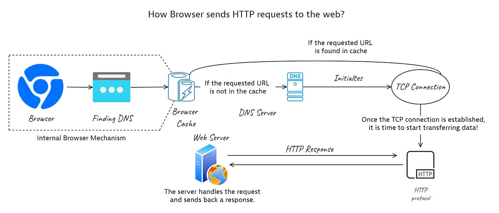
1️⃣ DNS Resolution
Browser asks DNS → "What is IP of example.com?"
Gets IP (e.g., 142.x.x.x)
2️⃣ TCP Connection
Browser establishes connection using 3-way handshake
SYN → SYN-ACK → ACK
3️⃣ HTTP Request Sent
GET /index.html HTTP/1.1
Host: example.com
User-Agent: Chrome
👉 Contains:
- Method (GET/POST/PUT/DELETE)
- Headers
- Optional body
4️⃣ Server Processing
Server receives request
Runs backend logic (API / DB calls)
5️⃣ HTTP Response
HTTP/1.1 200 OK
Content-Type: text/html
<html>...</html>
6️⃣ Browser Renders
Displays HTML, CSS, JS
🔑 Key Characteristics of HTTP
📌 Stateless
- Each request is independent
- No memory of previous request
👉 Solved using: Cookies, Sessions, Tokens
🔐 What is HTTPS?
🎯 Goal:
👉 Secure communication using:
- Encryption
- Authentication
- Data Integrity
🌐 Step 1: User Enters URL
You type: https://google.com
Browser identifies: 👉 "Use HTTPS (secure connection)"
🔍 Step 2: DNS Resolution
Browser asks DNS: 👉 "What is IP of google.com?"
Gets IP (e.g., 142.x.x.x)
🤝 Step 3: TCP Connection
TCP 3-way handshake happens: SYN → SYN-ACK → ACK
👉 Now connection is established
🔐 Step 4: TLS Handshake (Core of HTTPS)
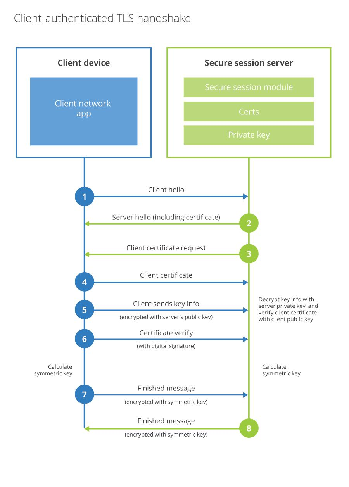
4️⃣.1 Client Hello
Client sends:
- Supported TLS versions
- Cipher suites (set of algorithms like TLS_ECDHE_RSA_WITH_AES_128_GCM_SHA256)
- Random number
What is TLS_ECDHE_RSA_WITH_AES_128_GCM_SHA256?
Algo we use:
- ECDHE → Key exchange
- RSA → Authentication
- AES_128_GCM → Encryption
- SHA256 → Integrity
4️⃣.2 Server Hello
Server responds with:
- Selected TLS version
- Cipher suite
- Server random number
📜 4️⃣.3 Certificate Sent
Server sends SSL/TLS certificate
👉 Certificate contains:
- Public key
- Domain name
- Issued by trusted CA
✅ 4️⃣.4 Certificate Verification
Client verifies certificate using trusted authorities
👉 If valid → continue
👉 If invalid → ❌ warning
🔑 4️⃣.5 Key Exchange
1. Browser generates:
- Pre-master secret
2. Encrypts it using: Server's public key
3. Sends to server
🔓 4️⃣.6 Session Key Creation
Both client & server generate:
- Same symmetric session key
👉 Used for fast encryption
🔒 Step 5: Secure Communication Starts
All data now encrypted using session key:
HTTP → HTTPS
- Request: GET /
- Response: HTML page
🔁 Step 6: Data Transfer
1. Encrypted data flows both ways
2. Cannot be read by attackers
🔗 Concepts Involved
| Concept | Role |
|---|---|
| DNS | Domain → IP |
| TCP | Reliable connection |
| TLS | Security layer |
| Certificate | Server identity |
| Public Key | Used for key exchange |
| Session Key | Fast encryption |
| HTTPS | HTTP + TLS |
⚡ Key Insight
👉 HTTPS uses 2 types of encryption:
🔐 Asymmetric (Public/Private Key)
Used during handshake, Secure key exchange
⚡ Symmetric (Session Key)
Used for actual data, Faster
🧠 Summary
👉 HTTPS works by first establishing a TCP connection, then performing a TLS handshake where certificates are verified and a shared session key is created using asymmetric encryption, after which all communication is encrypted using symmetric encryption.
So: HTTP is a stateless protocol used for communication between client and server over TCP, where data is sent in plain text. HTTPS is a secure version of HTTP that uses TLS encryption. It establishes a secure connection using a TLS handshake involving certificate verification and key exchange, after which data is encrypted using symmetric keys.
🔐 Authentication vs Authorization
🔑 1. Authentication (Identity Verification)
📌 What it means
Authentication verifies user identity
⚙️ How Authentication Works (Flow)
- User sends credentials (username/password)
- Server verifies them
- If valid → user is authenticated
- System creates session/token
🧩 Types of Authentication (Main Categories)
1️⃣ Knowledge-Based Authentication (Something You Know)
✅ Examples:
- Password
- PIN
- Security questions
👍 Pros:
- Easy to implement
- Widely used
❌ Cons:
- Can be guessed / hacked
- Phishing attacks
📌 Interview Point:
👉 Most common but least secure alone
2️⃣ Possession-Based Authentication (Something You Have)
✅ Examples:
- OTP (SMS/email)
- Authenticator apps
- Hardware tokens (like security keys)
👍 Pros:
- More secure than passwords
- Hard to steal remotely
❌ Cons:
- Device can be lost
- SMS OTP can be intercepted
3️⃣ Inherence-Based Authentication (Something You Are)
✅ Examples:
- Fingerprint
- Face recognition
👍 Pros:
- Very secure
- Convenient
❌ Cons:
- Expensive systems
- Privacy concerns
- Cannot change if compromised
4️⃣ Multi-Factor Authentication (MFA)
🎯 Combines multiple types:
- Password + OTP
- Password + Fingerprint
✅ Example:
- Login → enter password
- Then → OTP sent to phone
👍 Pros:
- Highly secure
- Industry standard
❌ Cons:
- Slightly slower login
5️⃣ Token-Based Authentication
🔑 Concept:
1. User logs in once
2. Server gives token (JWT, session ID)
3. Token used for future requests
✅ Flow:
- Login with credentials
- Server returns token
- Client sends token in every request
👍 Pros:
- Stateless (scalable)
- Used in APIs
❌ Cons:
- Token theft risk
📌 Example:
JWT (JSON Web Token) which Contains : User ID , Roles , Expiry
6️⃣ Certificate-Based Authentication
🔐 Concept:
Uses digital certificates (public key crypto)
✅ Used in:
- HTTPS (server authentication)
- Enterprise systems
👍 Pros:
- Very secure
- No passwords
❌ Cons:
- Complex setup
7️⃣ OAuth (Third-Party Authentication)
🔗 Concept:
Login using another service
✅ Examples:
- "Login with Google"
- "Login with Facebook"
👍 Pros:
- No need to create new account
- Secure delegation
❌ Cons:
- Dependency on third party
8️⃣ SSO (Single Sign-On)
🔑 Concept:
One login → access multiple systems
✅ Example:
- Login once → access Gmail, Drive, YouTube
👍 Pros:
- Better user experience
- Centralized authentication
❌ Cons:
- If compromised → access to everything
⚖️ Summary Table
| Type | Example | Security |
|---|---|---|
| Knowledge | Password | Low |
| Possession | OTP | Medium |
| Inherence | Fingerprint | High |
| MFA | Password + OTP | Very High |
| Token | JWT | High |
| OAuth | Google login | High |
| SSO | One login multiple apps | High |
⚖️ Real-World Architecture Used By Companies
Most companies (Google, Netflix, etc.) use:
👉 JWT + Refresh Token + HTTPS + Secure Cookies
🔑 1️⃣ Login Phase
1. User enters: Username + Password
2. Server verifies credentials
3. 👉 Then server generates:
✅ Two Tokens:
- Access Token (JWT)
- Refresh Token
⚡ 2️⃣ Access Token (Short-lived)
1. Used in every API request
2. Lifetime: 👉 Typically 5–15 minutes (not always 2–3 min, but similar idea)
🔄 3️⃣ Refresh Token (Long-lived)
1. Stored securely (HTTP-only cookie/db)
Lifetime: 👉 Hours / days / weeks
🔁 4️⃣ Token Refresh Flow
✅ When access token expires :
- Client sends refresh token
- Server verifies it
- Server issues new access token
👉 User does NOT login again
🔐 Why This Design?
| Problem | Solution |
|---|---|
| Stolen token risk | Short-lived access token |
| Frequent login annoying | Refresh token |
| Scalability | Stateless JWT |
🧠 Summary
👉In real-world systems, companies use token-based authentication with short-lived access tokens (often JWT) and long-lived refresh tokens. The access token is used for API calls and expires quickly for security, while the refresh token is used to obtain new access tokens without forcing the user to log in again.
🔐 2. Authorization (Access Control)
📌 What it means
Authorization decides:
"What are you allowed to do?"
⚙️ How Authorization Works
- User is authenticated
- System checks permissions
- Grants or denies access
🔑 Types of Authorization
1️⃣ Role-Based Access Control (RBAC)
👉 Based on roles:
- Admin
- User
- Manager
👉 Example:
Admin → full access
User → limited access
2️⃣ Attribute-Based Access Control (ABAC)
👉 Based on attributes:
- User role
- Location
- Time
👉 Example:
Only allow access during office hours
3️⃣ Access Control Lists (ACL)
👉 Define permissions per resource
Example:
File A:
- User1 → read
- User2 → write